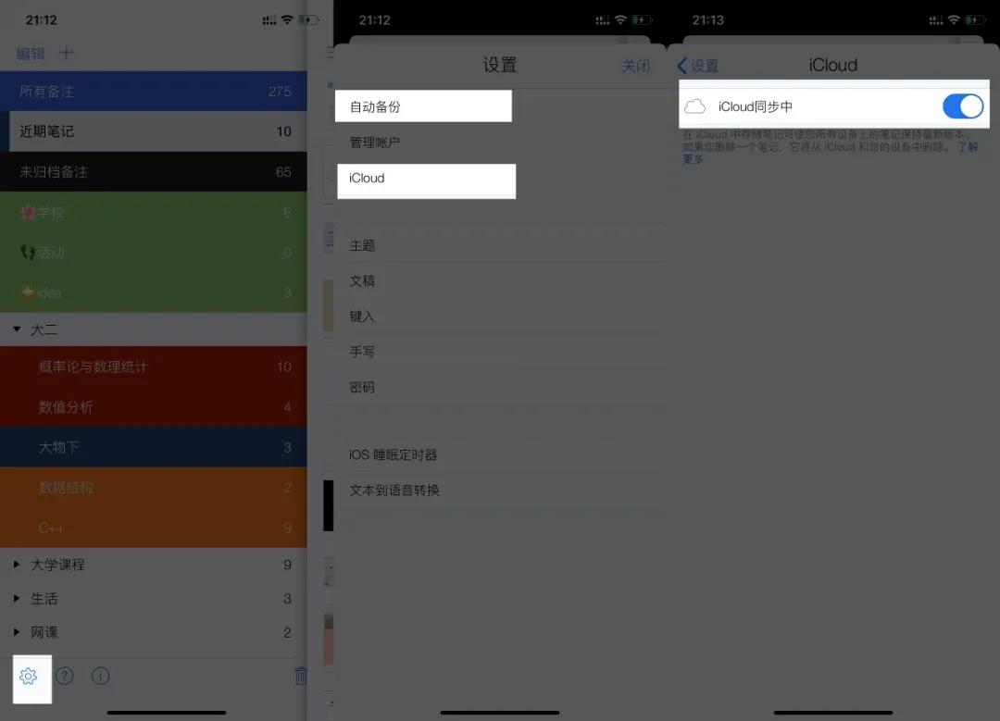
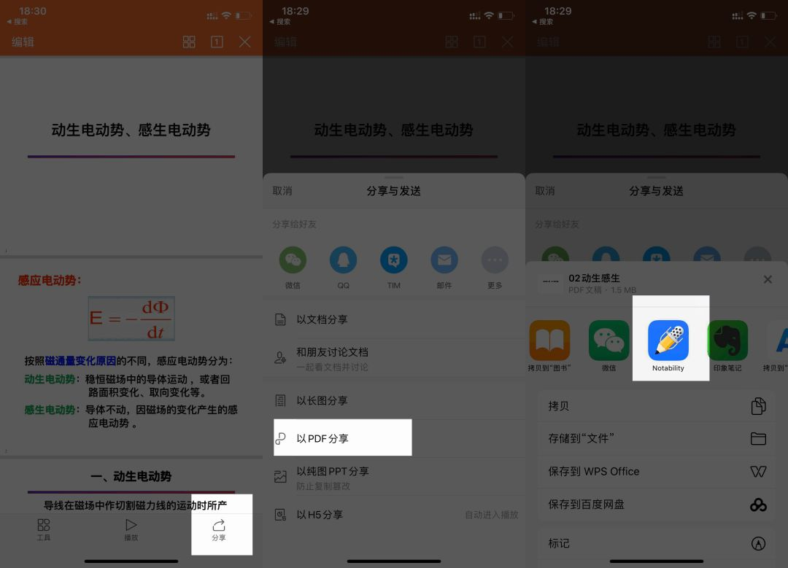
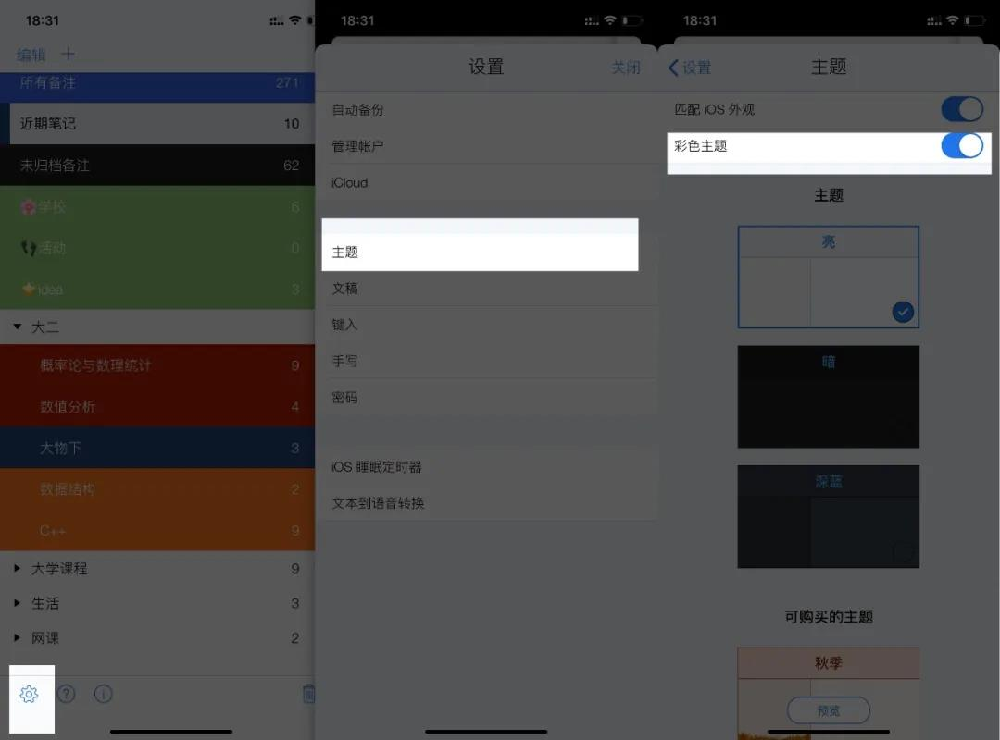

你应该不想让你的笔记突然消失吧，或者换个设备就不见了，那我们就可以先设置云端同步。 在软件内的左下角的「设置」，除了iCloud，还有「设置-自动备份」，里面有 Dropbox、谷歌 硬盘等，可以自选喜欢的方式。 推荐先使用 iCloud，如果是 iPhone+iPad，这种方式会让你的笔记完全无缝连接，但笔记 多了就容易占很大内存，故也可以使用其他云盘。国内的话，可以选择 OneDrive，要是国外的话， 谷歌硬盘是不错的选择。 除此之外，你也可以使用 WebDAV，国内支持 WebDAV 这种服务的，选择「坚果云」最好， 它支持每月 1G上传流量，3G下载流量，足够使用了。先下载一个软件「坚果云」，然后注册之后， 在坚果云的第三方应用管理那里，添加 NB，此时它会给你链接，你再打开 NB，把用户名称、密码 等添加进去。 用坚果云更详细的操作步骤，可以查看这个官方链接：http://help.jianguoyun.com/?s=webdav
如果导入 PPT ，你最好先在 WPS 里面打开 PPT，然后点文档分享为 PDF，再分享到 NB，因为 NB 虽然支持 PPT 格式，但显示真的不全，转换为 PDF 能更好的显示内容。
在 NB 里面打开「设置-主题-彩色主题」，可以设置彩色条，不同类型的设置为不同颜色，这样看起来会更加清晰。 如果某个类别的笔记多了，那就建立一个「分割条」，可以快速的把不同的主题放到分割条下面。
